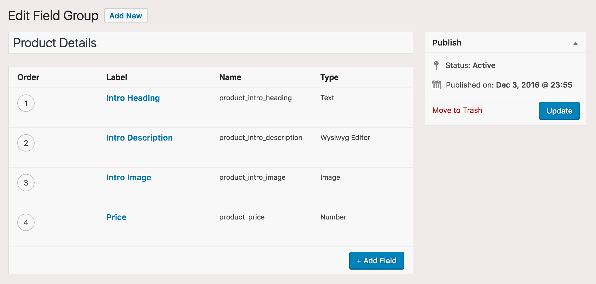

Advanced Custom Fields
I said that I'm a huge fan of using ACF on every client project. The ACF Pro version is a necessity for the following features:
- Options pages (that are easily managed the same way you manage custom fields for posts)
- Repeater fields (repeatable subfields)
- Flexible content fields (defined layouts with a set of subfields)
- Gallery fields
General best practices
When adding new field groups, always use a consistent naming format for the field names. As you add new labels in ACF and type in a name, ACF will auto-suggest the contents of the following field for the name. In the example below, I've added the product_ prefix to all field names:

When working with templates, pull in the fields as variables from either controllers or the Sage sage/template/{$class}/data filter:
<?php // @ app/controllers-single-product.php
namespace App;
use Sober\Controller\Controller;
class SingleProduct extends Controller
{
public function product_intro_heading() {
return get_field('product_intro_heading');
}
public function product_intro_description() {
return get_field('product_intro_description');
}
public function product_intro_image() {
return get_field('product_intro_image');
}
public function product_price() {
return get_field('product_price');
}
}
// @ app/filters.php or another file of your choosing
add_filter('sage/template/single-product/data', function (array $data) {
$data['product_intro_heading'] = get_field('product_intro_heading');
$data['product_intro_description'] = get_field('product_intro_description');
$data['product_intro_image'] = get_field('product_intro_image');
$data['product_price'] = get_field('product_price');
return $data;
});
<article itemscope itemtype="https://schema.org/Product">
<p><img itemprop="image" src="<?= $product_intro_image; ?>" alt="<?php the_title(); ?>"></p>
<h1 itemprop="name"><?= $product_intro_heading; ?></h1>
<?= $product_intro_description; ?>
<div itemprop="offers" itemscope itemtype="https://schema.org/Offer">
<span itemprop="price">$<?= money_format('%i', $product_price); ?></span>
</div>
</article>
Setting up ACF options pages
An ACF options page is great place to setup site-wide settings, such as social media URLs and company contact information (addresses, phone numbers).
/**
* Add ACF options page
*/
add_action('init', function () {
if (!function_exists('acf_add_options_page')) {
return;
}
acf_add_options_page([
'page_title' => 'Sage',
'menu_title' => 'Sage',
'menu_slug' => 'sage',
'capability' => 'edit_posts',
'parent_slug' => '',
'position' => 2, // Below 'Dashboard' menu item
'icon_url' => 'dashicons-admin-generic'
]);
acf_add_options_sub_page([
'page_title' => 'App Settings',
'menu_title' => 'App Settings',
'menu_slug' => 'settings',
'capability' => 'manage_options',
'parent_slug' => 'sage'
]);
});
Save fields as JSON, allow syncing
After activating the plugin, the first thing I do before creating any field groups is define a location for where to save the local JSON.
ACF's local JSON feature allows your field groups to be kept under version control. It also allows you to sync the fields on your WordPress site after deploying to a remote server, or pulling down changes from a colleague into your local development environment.
I generally create a functionally plugin and define the JSON to write to the mu-plugins/site-name/field-groups/ directory.
// @ mu-plugins/site-name.php
/**
* Place ACF JSON in field-groups directory
*/
add_filter('acf/settings/save_json', function ($path) {
return dirname(__FILE__) . '/site-name/field-groups';
});
add_filter('acf/settings/load_json', function ($paths) {
unset($paths[0]);
$paths[] = dirname(__FILE__) . '/site-name/field-groups';
return $paths;
});
I then create the mu-plugins/site-name/field-groups/ folder and place a blank index.php file inside of it. After this functionality is in place on your site, save an ACF field group and then take a look at the field-groups directory:
mu-plugins
├── site-name
│ └── field-groups
│ ├── group_58435138c6ece.json
│ ├── group_58435140df455.json
│ └── index.php
└── site-name.php
Disable UI on non-development environments
Disabling the ACF admin interface on production servers will prevent clients from causing trouble.
If you use Bedrock, the WP_ENV constant is set based off what environment you're on. For developent, WP_ENV is always development, so you could use the following code to disable ACF's UI on remote servers:
/**
* Disable ACF UI in non-development environment
*/
defined('ACF_LITE') || define('ACF_LITE', defined('WP_ENV') && WP_ENV !== 'development');
ACF_LITE removes ACF completely from the WP admin. The downside to this method is that it would disable the ability to run ACF JSON syncing from the WordPress admin on production.
Another option is to only allow the ACF admin menu item to show up for specific usernames:
/**
* Hide menu items from the admin menu
*/
add_action('admin_menu', function() {
// List of users that don't have pages removed
$admins = [
'admin',
'ben'
];
$current_user = wp_get_current_user();
if (!in_array($current_user->user_login, $admins)) {
remove_menu_page('edit.php?post_type=acf-field-group');
}
}, PHP_INT_MAX);